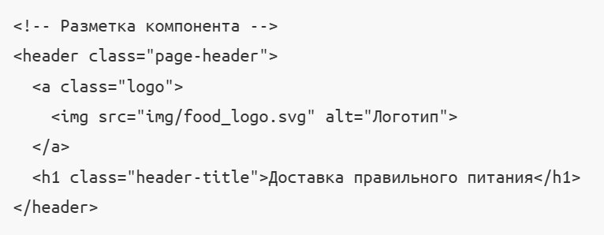
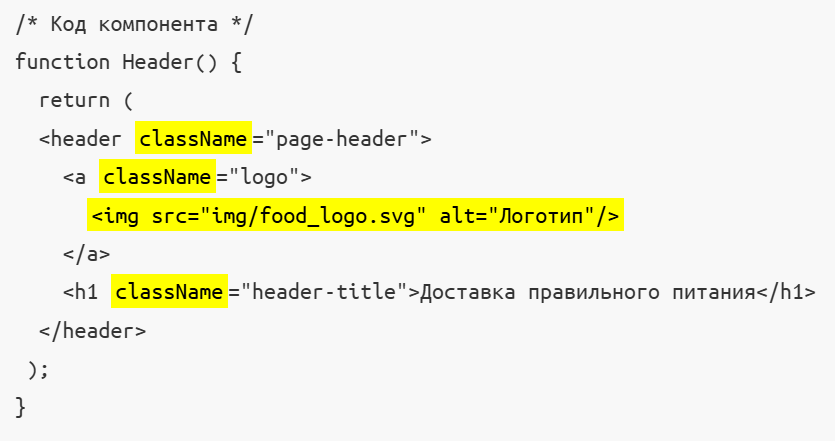
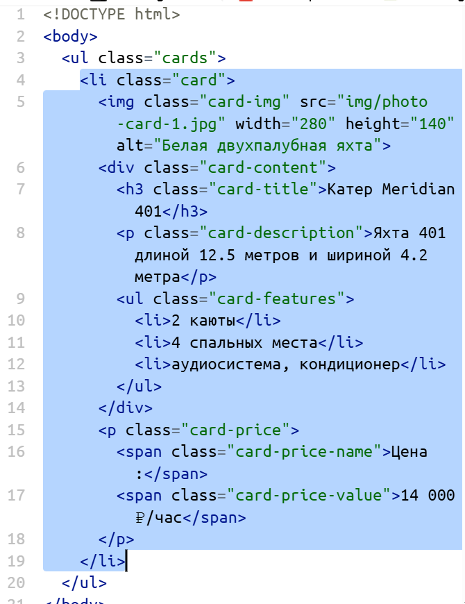
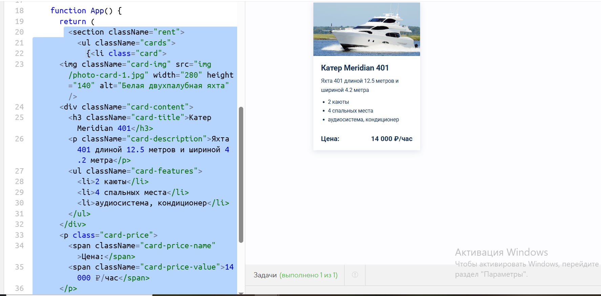

Можно приступать к созданию компонентов. В веб-студии Кекса есть верстальщик. И он уже подготовил для нас вёрстку. Нам осталось выделить повторяющиеся части, оформить их в JSX-шаблон и заполнить переменные части шаблона из данных.
Начнём с компонента Карточка. В разметке — это <li class="card"> (смотрите вкладку card-template.html). Подготовим шаблон для компонента, чтобы затем его переиспользовать для всех элементов списка.
При переносе разметки из вёрстки в JSX важно помнить про отличия синтаксиса. Чтобы преобразовать HTML в JSX, нужно:
<!-- Разметка компонента -->
<header class="page-header">
<a class="logo">
<img src="img/food_logo.svg" alt="Логотип">
</a>
<h1 class="header-title">Доставка правильного питания</h1>
</header>

/* Код компонента */
function Header() {
return (
<header className="page-header">
<a className="logo">
<img src="img/food_logo.svg" alt="Логотип"/>
</a>
<h1 className="header-title">Доставка правильного питания</h1>
</header>
);
}

Для перевода большого объёма HTML-разметки в формат JSX можно использовать онлайн-сервисы. Такие формальные задачи хорошо автоматизируются. Мы предлагаем вам сделать все замены вручную, чтобы, во-первых, лучше познакомиться с разметкой карточки яхты, во-вторых, наработать мышечную память.
Вот разметка карточки переносим ее в скрипт.

